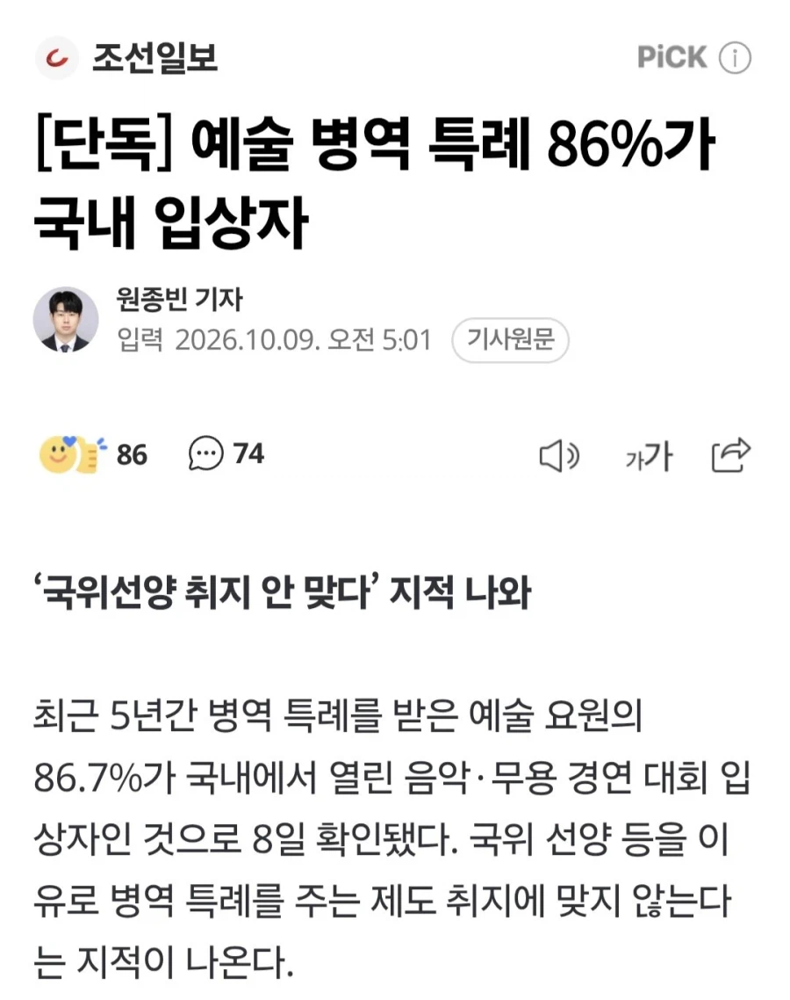

국내대회 우승인데 국위?선양

국내대회 우승인데 국위?선양
예술특례따위가 있었어???
한국이 북한만큼 가난하고 열등감 많고, 국제적 듣보잡일때나 아시안게임이 국위선양이었지, 지금은 BTS 미만 다 군대 가야지 쳐돌아가지건, 군면제 하나 보고 왔다고 미친 새끼들.
국위선양
반도체 >>>>> 기타 예체능 찌꺼기들
저거 더 어이 없는게 경쟁이 좆도 안 치열함 비인기 악기는 두 세명 경쟁해서 상 받는 애미뒤진 구조임
높으신분들 자제님들을 위한 거 아니겠나
ㅋㅋㅋ잘아네
존나 오래된 꿀통인데..
몰랐던 사람들 많았네 ㄷㄷ
쇼팽같은 세계적인 콩쿨은 인정하는데 국내는 장난하나ㅋㅋㅋ
국악같은 건 국내대회밖에 없긴 하지만
뭐 그렇다해도 병특 뿌려야 할 이유도 없지
거기 우승했다고 국위선양하는 것도 아니고 대단한 초절 기교도 아니라서 나이 지나도 할수있는게 그쪽이구만
가리봉동배 플룻콩쿨 우승자입니다
🙏🙏🙏
개인적으로 그런 생각도 든다..20대 남성에 한에서 예체능 및 체육계열 유망주들이 군대로 인해 재능을 못 피우고 한계에 다다를까봐. 한창 배워야할 시기에 2년이란 시간은 길긴 하니깐.. 이도저도 답 없긴 하네...
다른계열이라고 2년이 덜 가치있다 볼 수 있나 싶음. 공부도 2년 멈추면 감 엄청 떨어지는데 다들 대학교때 군대보내잖아
공부도 체육도 음악도 미술도 대학생도 편돌이도 피방알바도 노가다도 한창 배워야 할 시기에 2년은 긴데 예체능 체육을 전공했다고 천룡인 되는것도 아니고..
ㅋㅋ 무슨 말을 하고싶은지 알겠지만 악마의 열매 티어나누기도아니고 다똑같은 2년임 ㅋㅋ 20대에 재능이없어도 2년은 똑같은 가치임
그래서 1티어 열매는 뭔가요
신창섭의 정상화도 아니고ㅋㅋㅋㅋ 말 한 마디로 예체능 업계를 뒤집어 버린 그는 그저...
저기서 상받은 애들 전부 있는집 자식들일걸?? ㅋㅋㅋ
이런거 이제 싹 없애자 생각해보니까 걍 얼척이 없네 ㅋㅋㅋ
1등하면 병특주는 국내개최 대회 리스트다
국제대회도 그냥 한국 종특의 국제이고
이건 우리나라 개최만 리스트 한 거고 외국 잡다한 콩쿠르까지 포함하면 한 트럭임
이런 거보면 스포츠는 차라리 깔끔했다싶음 온 국민이 최소한 대회 이름은 알잖아
근데 보니까 음악보단 무용이 더 개꿀이네
양악
1. 윤이상국제음악콩쿠르
2. 서울국제음악콩쿠르
3. 제주국제관악콩쿠르
국악, 전통무용
4. 동아국악콩쿠르
5. 온나라국악경연대회
6. 전주대사습놀이전국대회
무용
7.서울국제무용콩쿠르
8. 코리아국제현대무용콩쿠르
9. 코리아국제발레콩쿠르
10. 동아무용콩쿠르
11. 전국신인무용경연대회
국악쪽은 국내대회 밖에 없다치고 (그러한들 굳이 병특 줄 이유는 안됨)
뭣보다 무용 저건 쓰잘데없는 거 개많음
제주 관악? 무늬만 국제지 지역대회급임
대체 왜 저딴거 1등 먹는다고 병특을 주는데 (특히 10, 11은 개어이없음)
저게 뭐가 국위선양?
그전에 ㅆㅂ 저런 대회 있다는 거부터 안 사람 있어?
해병 문학대회는 군필이지 ㅎ
내가 20년전에 생계곤란 병역감면 신청하려고 병역혜택 관련 내용을 본게 있는데
음악 쪽 해당대회가 두페이지를 넘었던 것으로 기억
운동은 각종 단체에서 성적따라 교부금이나 지원금으로 생활 체육 육성 도움이라도되지 예능은 쥐뿔 아무것도아님 그냥 지들 군면제용
국내는 빼라
국제도 몇개만 좆빠지지 나머진 그정돈 아님
꼴좋음ㅋㅋ
숨어서 개꿀빨고있었네
BTS도 군대갔다.
예술계?? 자기들 본인 위해서 입상한걸 왜 군면제를 해줘??
체육계가 아니라
저기부터 조졌어야되네 ㅅㅂ ㅋㅋㅋㅋㅋㅋ
아이고야 이거 교수님들이 많이 곤란해지시겠네요. 하하하
진짜 해도 너무하네, 다 없애야됨
실제 저걸로 면제 받으려면 국제콩쿨은 개쩌는 애들만 받고 있긴 함. 근데 국내는… 애매
BTS는 군대갔다오고
국내수상은 면제 ㅅㅂㅋㅋ
오래됐고 의도된 꿀단지였지 ㅋㅋ
문제삼는 목소리를 쭉 묵살해왔으니 여기까지 온거지
이거 개 좆만한 지들끼리만 아는 대회에서 입상해도 빼주는거라며
국내에서 수상받은 누군지도 아무도 모르는것들은 병역 특례 왜줌?
저기가 진짜 성역화된곳인데 어캐깸 ㅋㅋ
콩쿨은 진짜 좀 다 잡아쳐넣어야 됨
콩쿠르 저거는 누가 면제됐는지 알지도 못하는 종목들인데 없애는게 맞다.
노래 악기 잘 다룬다고 왜 병특을 줘야 함? ㅋㅋ
스토브리그 길창주역할했던 배우도 저걸로 면제였을걸
뭐냐 이거?
그냥 군대 갔다온 사람만 투표권 누리게 하자
디 높으시고 돈많은 사람들 자녀지뭐
국회엔 예체능하던 놈들만 모여있나?
전국체전 ㄷㄷ
이제 쉬쉬할일만 남았네